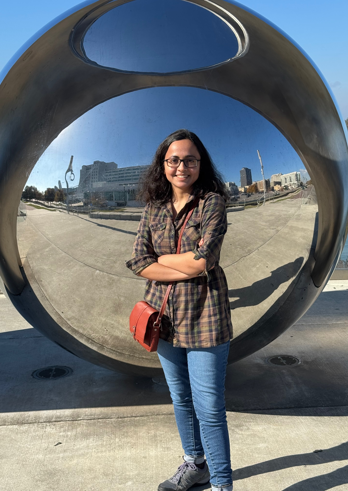

Tiasha Saha Roy
Department of Neuroscience
University of Minnesota
I am a computational cognitive neuroscience researcher at the University of Minnesota working in the Naselaris Lab with Thomas Naselaris and CVN Lab with Kendrick Kay. My research uses computational models to characterize the geometry of neural representations underlying vision and mental imagery, with an emphasis on their shared and distinct coding mechanisms.
I hold a master's degree in Mathematics and Computing (MSc, IIT Guwahati) and received my PhD from IISER Kolkata in 2021. My PhD thesis focused on exploring the neural timeline of different real world perceptual decision making tasks. Looking forward, I want to leverage the computational tools and insights developed during my PhD and postdoctoral research to advance our understanding of naturalistic vision and mental imagery, with the goal of informing more individualized approaches to mental health.
Email · Google Scholar · ORCID
News
- Aug 2026 Presented poster on ``Inferring Scene Segmentations from fMRI Responses in the Natural Scenes Dataset" at CCN 2026, New York City.
- April 2026 Invited talk (virtual) on ``Mental imagery produces low-dimensional projections of visual representations in the human brain" at Favila lab, Brown University.
- Mar 2026 Work from PhD on neural timeline of contextual guidance accepted at European Journal of Neuroscience.